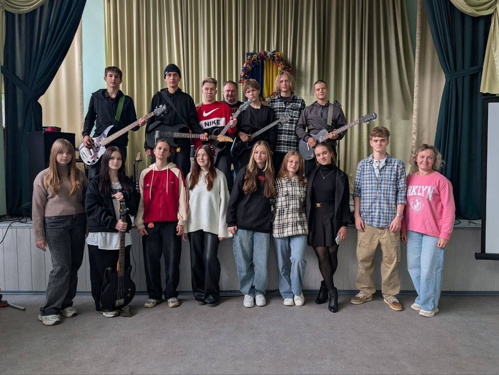
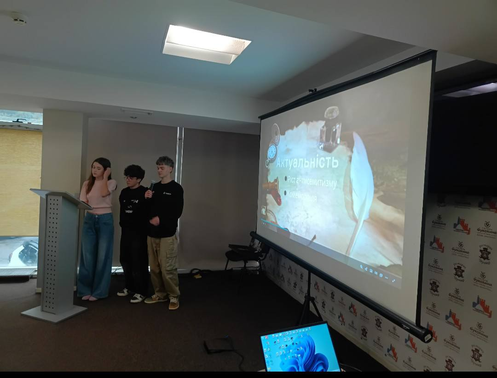
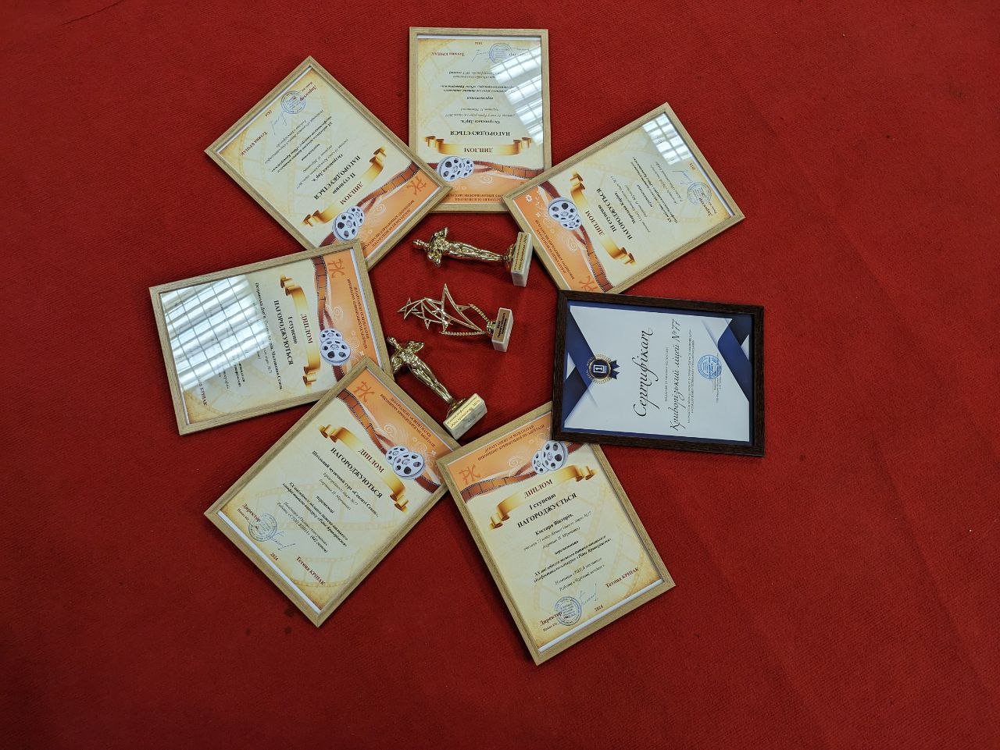

Education
Academic journey & learning milestones.
My academic path connects design, technology, and human behavior. I prioritize studio-based learning and research labs that push me to build, test, and iterate.
Major + concentration
Focused on creative technology, applied research, and communication systems.
Favorite courses
Human-centered design, experimental media, data storytelling, and ethics.
Campus leadership
Led student organizations, hosted workshops, and supported peer mentorship.
Volunteering


REP


Cinema


IT Academy STEP


Contests
History contests

Film contests
